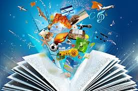
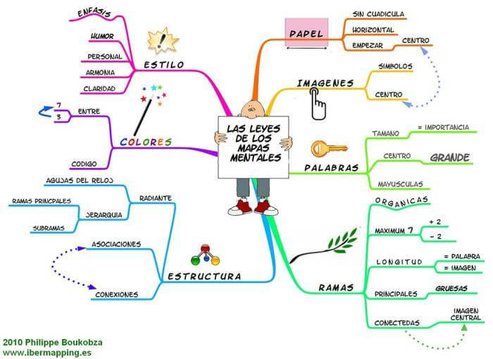

Expresión Escrita

La expresión escrita es el modo de exteriorización de ideas, información, sentimientos, reclamos, peticiones, que utiliza el ser humano, plasmando
sobre un soporte material o virtual signos gráficos convencionales que varían de acuerdo a cada cultura, y si contienen firma, o pueden de algún
modo certificarse como auténticos valen como documentos probatorios, por ejemplos contratos civiles o comerciales, testamentos, títulos de crédito,
actas de asamblea, etcétera.
La expresión escrita fue una elaboración cultural más tardía que la oral, surgiendo alrededor del año 3.000 a. C, y significó un gran avance para
la humanidad, a tal punto que marcó convencionalmente el fin de la Prehistoria y el comienzo de Historia.
Las primeras manifestaciones escritas aparecieron en Sumer, pueblo de la Mesopotamia asiática, donde se hizo necesario contar con una memoria
permanente que diera cuenta de los acontecimientos y de las transacciones comerciales que realizaban. Escribían usando pictogramas o representando
los objetos reales, siendo antecedente de los jeroglíficos egipcios. Luego se diferenciaron los sonidos de las sílabas, hasta llegar a la creación
del alfabeto. Los alfabetos semíticos no incluyen vocales, escribiéndose de derecha a izquierda. El griego a veces se usaba en ambos sentidos,
aunque luego se acordó que fuera de izquierda a derecha. El más difundido en la actualidad es el alfabeto latino, que es el que se emplea en
castellano, inglés, francés o portugués.
Descripción: Pueden ser personas, lugares o acciones, es la imagen hecha con palabras. Es representar un objeto para que la persona que lo lee sea
capaz de reproducirlo en su mente.
Características
Narración: Es el relato de un o varios sucesos ordenados cobrando un significado propio. Narrar es contar, relatar acciones, conectando las situaciones.
Su orden puede ser cronológico donde los hechos se presentan en el mismo orden que pasaron o climático donde se presentan como el autor quiere.
Argumentación: Es un discurso más elaborado, los juicios de valor que se tienen sobre un tema. El escritor persuade al lector sobre el punto de vista.
Exposición: Es información presentada de forma sencilla pero no emite juicios de valor del emisor. Es lo contrario a la argumentación.
Metodos de expresión escrita
Mapa conceptual
Es una herramienta de aprendizaje basada en la representación gráfica de un determinado tópico
a través de la esquematización de los conceptos que lo componen. Estos conceptos son escritos de forma jerárquica dentro de figuras geométricas como óvalos
o recuadros, que se conectan entre sí a través de líneas y palabras de enlace. Su uso permite organizar y comprender ideas de manera significativa.
Mapa mental
 Son un método muy eficaz para extraer y memorizar información. Son una forma lógica y creativa de
tomar notas y expresar ideas que consiste, literalmente, en cartografiar sus reflexiones sobre un tema. Cuentan con una estructura orgánica radial a partir
de un núcleo en el que se usan líneas, símbolos, palabras, colores e imágenes para ilustrar conceptos sencillos y lógicos. Permiten convertir largas y
aburridas listas de datos en coloridos diagramas, fáciles de memorizar y perfectamente organizados, que funcionan de forma totalmente natural, del mismo modo
que el cerebro humano.
Cuadro sinóptico
Un cuadro sinóptico es una representación gráfica de ideas o textos de manera acotada, mediante
la utilización de palabras clave recuadradas y conectadas mediante líneas que pueden o no poseer conectores. Gráficamente es como un árbol, que nace y tiene
muchas ramas; visualmente comienza en una palabra inicial de la cual desembocan varias otras. Es normalmente implementado como una estrategia para organizar
conocimientos de una manera simple y clara de comprender. Contiene una estructura ya que, se basa en una temática en particular y sus diversas relaciones.
Cuadro comparativo
es una herramienta gráfica que se utiliza para comparar. Los elementos que se comparan se
ubican en columnas y luego, en distintas filas, se mencionan los datos en cuestión. Los cuadros comparativos se utilizan para organizar la información,
facilitando la identificación de características semejantes y diferentes en los conceptos.